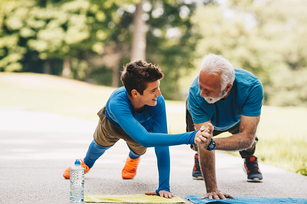

An initiative of Strong Australia
·7 stories live
National Strength Day
Australians sharing what it means to be strong — physically, emotionally, and for each other. Real stories from real people, across every age.
Upcoming event
Strong Together: an evening with Strong Australia and CPHCN
Join CPHCN and Strong Australia for an evening of networking and conversation on the eve of National Strength Day.
Strong Australia is a national community dedicated to promoting strength as a foundation for health, independence and wellbeing across the lifespan. Founded by Dr Coralie Wales OAM, the organisation takes a broad view of what it means to be strong — physical strength is part of it, but so are resilience, relationships, community connection and the ability to stay active and independent as we age.
This event brings together the Strong Australia Board and researchers, clinicians and partners from the University of Sydney's Community and Primary Health Care Network (CPHCN). It's an opportunity to make new connections and explore shared interests at the intersection of primary health care and healthy ageing across the lifespan.
When
Thursday 13 August 2026
4:00 – 7:00pm
Where
Chris O'Brien Lifehouse Education Centre, Level 5
Please note the venue for this event has changed since originally posted.
Light refreshments will be provided. All welcome.
About National Strength Day
A day to celebrate the strength Australians are building — at every age
National Strength Day is an initiative of Strong Australia — a national community dedicated to promoting strength as a foundation for health, independence and wellbeing across the lifespan.
We invite Australians of all ages to share their strength story — how they build physical strength, what being strong means to them, and who helps them along the way. These stories are published here, sorted by age category, for all of Australia to read and be inspired by.
Six age categories
18–30, 31–45, 46–60, 61–75, 76–90, and 91+. Every generation of Australian strength is represented.

Strength Together
Sharing stories makes us strong on National Strength Day each year
National Strength Day is a community-driven celebration of strength in all its forms. From sharing your story to seeing it published for all of Australia to read.
Share your strength story
Tell us how you build strength — physically, emotionally, and for others. Answer four short questions about your journey and upload a portrait photo.
Stories published by age group
The Strong Australia team reviews every submission. Approved stories are published to the gallery, sorted into six age categories: 18–30, 31–45, 46–60, 61–75, 76–90, and 91+.
Stories of strength
Hear from Australians
across every age
Each story is a window into how strength shapes lives — from the gym to the kitchen table, from 18 to 91+.
31–45
years old46–60
years old61–75
years old
I do not want people to reach older age and feel like they have to relinquish who they are. If we can protect strength, we can protect independence, dignity and identity. That is why Strong Australia exists.
Dr. Coralie Wales (OAM)Founder, Strong Australia Inc.